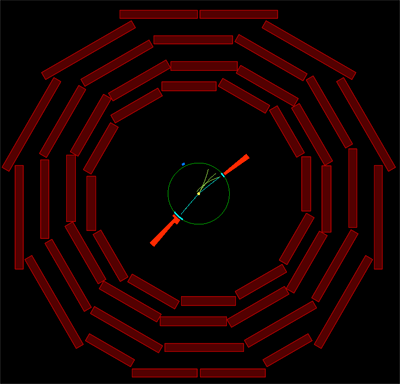

Dielectron (Z → e e)
In the decay of a Z to two electrons (called a dielectron), the electrons are captured in the electromagnetic calorimeter and show up in the event display as cyan tracks in the inner tracker and two red bars extending from the green ring.

Event Features
Dimuon
Z → μ μ
Dielectron
Z → e e
Dijet
Z → jet jet
All
Go Back to Game